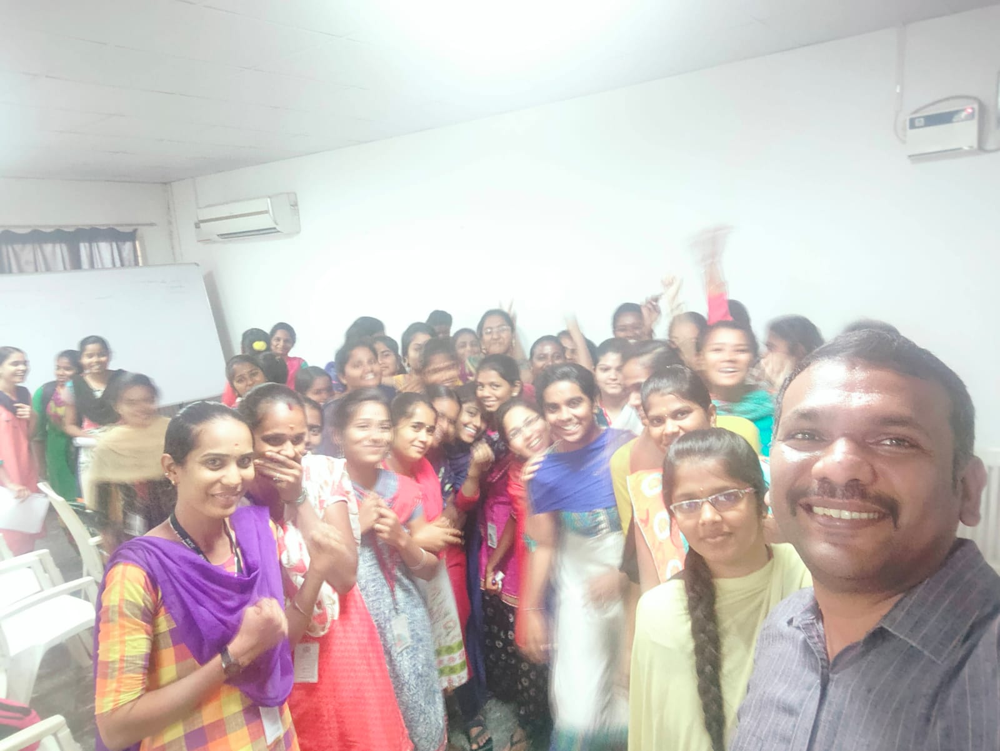
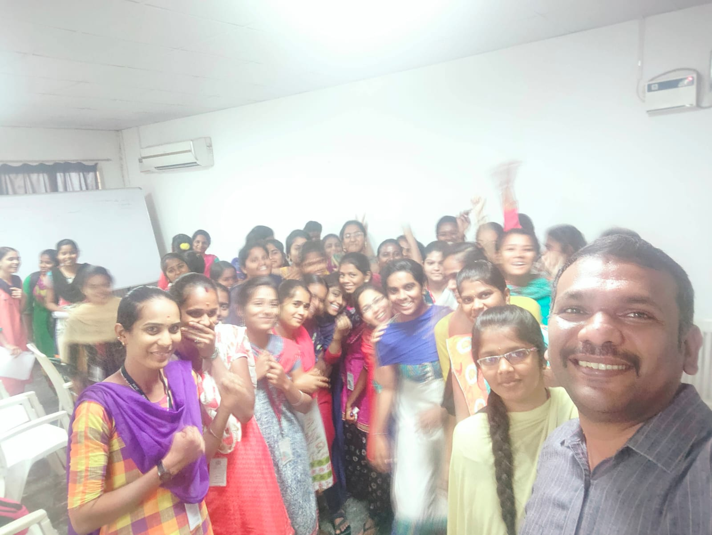

Hii This is
Vinoth Babu
Counselling Psychologist, Corporate Behavioral Trainer and Mind Mastery Coach
Career Journey & Achievements
Experience the power of transformation with Vinoth Babu
Vinoth's career graph has been a testament to his profound experience in reshaping professionals. With an environment of continuous learning and growth, he started his journey in 2005, gaining substantial experience in corporate training and counseling before transitioning full time into leadership and managerial sectors for empowering professionals.
| Mphasis (2005-2006): Worked as a Technical Support Executive, developing strong communication and problem-solving skills. |
| Sutherland Global Services (2006-2008): Served as a Quality Lead for Microsoft, gaining expertise in performance metrics, quality management, and corporate excellence. |
| ISoft Innovations (2008-2013): Served as a Custom Engineer, honing his analytical thinking, decision-making, and problem-solving abilities. |
| HCL-Comnet (2013-2017): Worked as a Senior Specialist, focusing on team building, leadership development, and training. |
| Positive Pinnacle (2018-Till date): Training Consultant, delivering high-impact on-boarding programs for complex business processes. |
- BCA (Bachelor of Computer Applications)
- PGDHRM (Post Graduate Diploma in Human Resource Management)
- M.Sc. Counselling Psychology
- Employee of the Month Award for 3 consecutive months.
- Outstanding Trainer Award for the year 2016, for tangible transformative impact.
- Quarterly Champion of Metrics for showcasing measurable results through training programs.
His extensive experiences are credited to his strong foundation in academics where he exceled.
His commitment to excellence has earned him numerous accolades:
About
Certificates, Programs & Clientele
Vinoth Babu is a multi-certified professional trainer and Mind Mastery coach holding numerous accolades and certifications on a multitude of domains. His certifications include:
- Train the Trainer (TTT) Certification from Thaddeus Lawrencer & Blair Singer
- Certified Six Sigma Green Belt (Benchmark)
- Advanced Diploma in Hypnosis - Business NLP, UK
- Certified Emotional Intelligence Coach Practitioner
- Professional Trainer in Experiential Learning - IIPE, Canada
- NLP Practitioner - ABNLP Approved
- Advanced NLP Diploma - ICF Approved
- Certified Leadership & Executive Coach - ICF Approved
- Certified Wellness Coach - ICF Approved
- IAO Certified Life Coach - New Skills Academy, UK
- IAO Certified Mindfulness Coach - New Skills Academy, UK

He holds mastery-level expertise in various workforce segments including Senior-Management, Mid-Management and Supervisors.
His Signature Programs Experience the Impact that will Rewire Your Subconscious Mind:
| The Leader in YOU - Unleashing the Leadership Mindset |
| Sales Mastery with NLP |
| Master the Psychology of Influential Communication |
| Emotional Intelligence Mastery - The Science of Self Engineering. |
He has successfully delivered competency training programs on the following:
NLP
problem Solving
Time Management
Sales Mastery with NLP
Infuencing Sales Skill
Interpersonal Skils
Motivation
Managerial Excellence
Emotional Intelligence
Analytical Thinking
Creativity & Innovation
Team Building
Decision Making
change Management
Leadership Skills
Personal Effectiveness
Blog
Vinoth Babu is a highly accomplished certified counseling psychologist, Behavioral Trainer and Mind Mastery Coach with over 15 years of proven expertise in holistic training methods for self transformation He has empowered thousands of professionals in overcoming self-limiting beliefs and achieving personal and professional growth and success. He caters to various sectors including corporate, retail, educational, entertainment, and media.
What sets Vinoth apart is his competency-based training, which focuses on professional communication and leadership, which is especially essential in the corporate sector. With his profound knowledge of human psychology, Vinoth has made a significant impact in transformative and influential leadership enhancing workplace productivity, analytical thinking, and decision-making abilities.
He offers customized training programs in NLP (Neuro-Linguistic Programming), Change Management, Emotional Intelligence, Hypnosis, as well as Personality Development, and Influencing Skills that are much-needed in industrial frameworks and success dynamics. His sessions are tailored to your unique needs with a seamless blend of practical strategies, scientific techniques, and psychological insights that can reshape clients into global business leaders.
Gallery
 
